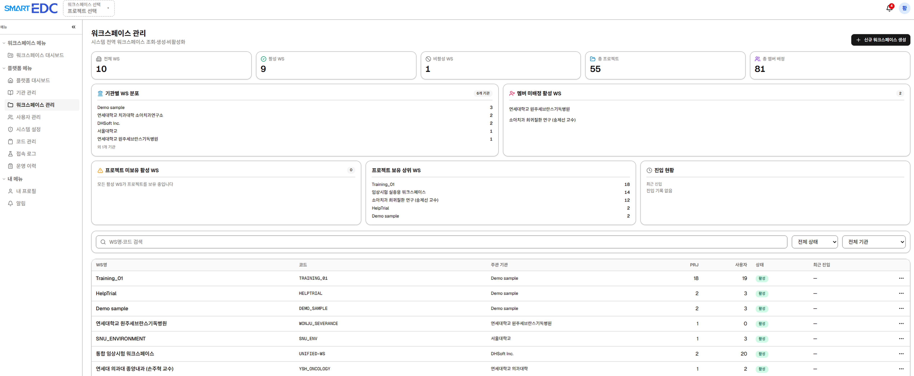
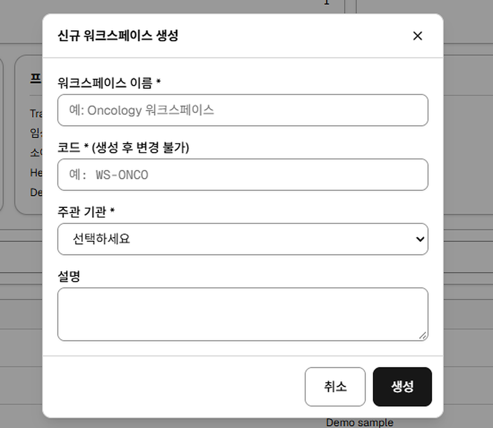
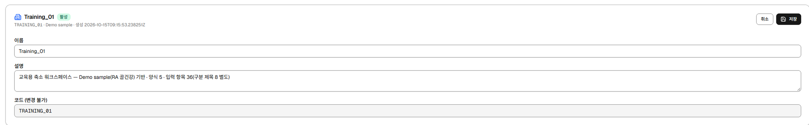
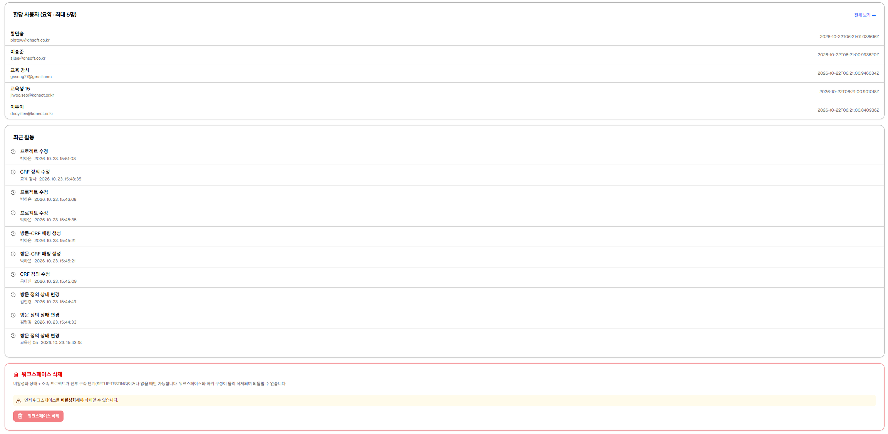
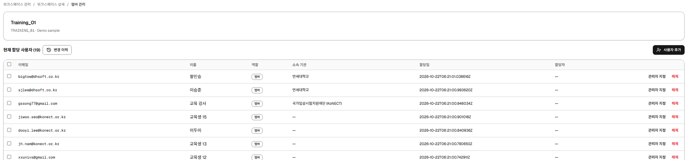
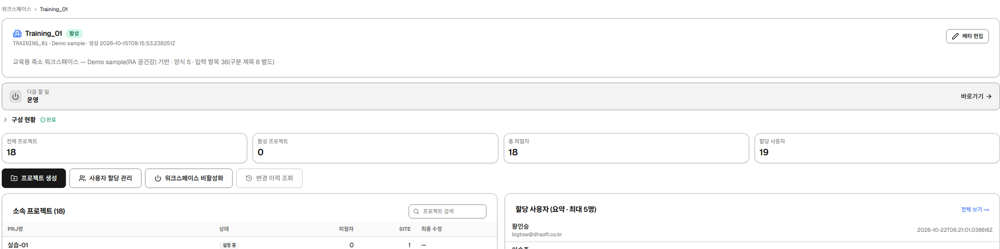
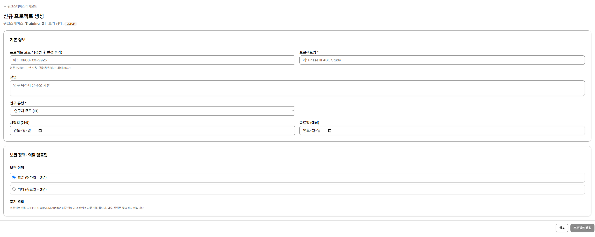
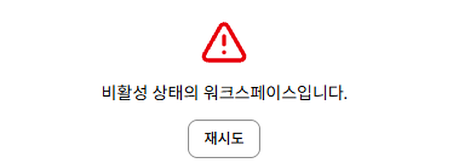

워크스페이스
SCR-WS-002 · 관리 목록 · 생성 · 상세 · 사용자 할당 · 대시보드
워크스페이스 관리
- 1.1화면 구성
- 1.2신규 워크스페이스 생성
1.1화면 구성
개요
시스템 전역의 워크스페이스를 관리하는 화면입니다. 워크스페이스는 프로젝트를 담는 그릇이고 사용자 할당의 단위이므로, 연구를 시작하려면 먼저 여기에서 워크스페이스를 만들어야 합니다.
화면 설명

왼쪽 메뉴의 워크스페이스 관리 로 진입합니다.
신규 워크스페이스 생성 — 워크스페이스를 새로 만듭니다 1.2.
집계 — 전체·활성·비활성 워크스페이스 수와 총 프로젝트 수, 총 멤버 배정 수입니다.
검색과 필터 — 이름이나 코드로 찾고, 상태와 주관 기관으로 좁힙니다.
부제에 이 화면이 다루는 범위가 안내됩니다 — 시스템 전역 조회·생성·비활성화입니다.
현황 카드 — 기관별 분포, 멤버가 배정되지 않은 활성 워크스페이스, 프로젝트가 없는 활성 워크스페이스 등 손봐야 할 곳을 먼저 보여줍니다.
표에는 이름·코드·주관 기관·프로젝트 수·사용자 수·상태·최근 진입이 표시됩니다. 이름을 선택하면 상세로 이동합니다 2.1.
행 오른쪽 끝의 ⋯ 에는 상세 보기 · 사용자 할당 · 비활성화(비활성 워크스페이스는 활성화)가 있습니다. 이 메뉴는 시스템 관리자에게만 표시됩니다.
유의사항
오해하기 쉬운 동작
- • 워크스페이스 생성·비활성화는 시스템 관리자만 할 수 있습니다. 워크스페이스 관리자는 본인에게 할당된 워크스페이스를 조회만 할 수 있습니다.
- • 워크스페이스 관리자에게는 행 오른쪽 끝의 ⋯ 메뉴 자체가 표시되지 않습니다. 항목만 비활성으로 남는 것이 아니라 열이 비어 있으므로, 상세와 사용자 할당으로는 이름을 직접 선택해 들어갑니다 2.1 · 3.1.
1.2신규 워크스페이스 생성
개요
워크스페이스를 새로 만듭니다. 별표가 붙은 세 항목은 반드시 입력해야 하며, 생성하면 바로 상세 화면으로 이동합니다.
화면 설명

워크스페이스 이름 — 사용자에게 표시되는 이름입니다. 나중에 바꿀 수 있습니다 2.2.
코드 — 워크스페이스를 구분하는 고유 코드입니다. 라벨에 적힌 대로 생성 후에는 변경할 수 없으므로 신중하게 정하십시오.
주관 기관 — 이 워크스페이스를 주관하는 기관을 선택합니다. 목록에 없으면 기관 관리에서 먼저 등록해야 합니다.
생성 — 워크스페이스를 만듭니다.
설명 — 선택 항목입니다. 어떤 연구를 담는 워크스페이스인지 적어 두면 목록에서 구분하기 쉽습니다.
창 밖을 선택하거나 닫기를 선택하면 입력이 버려집니다.
유의사항
필수 확인 데이터 손상 · 폼 완료 불가
- • 코드는 생성 후 변경할 수 없습니다. 조직의 코드 규칙을 먼저 확인한 뒤 입력하십시오.
워크스페이스 상세
- 2.1화면 구성
- 2.2메타 편집
- 2.3사용자 · 활동 · 삭제
2.1화면 구성
개요
단일 워크스페이스의 전체 정보와 할 일을 모아 보여줍니다. 구축이 어디까지 진행되었는지, 다음에 무엇을 해야 하는지가 한눈에 드러납니다.
화면 설명

메타 편집 — 이름과 설명을 수정합니다 2.2.
바로가기 — 다음 할 일 로 제시된 단계의 화면으로 이동합니다.
프로젝트 생성 — 이 워크스페이스에 프로젝트를 만듭니다 3.3.
사용자 할당 관리 — 워크스페이스 멤버를 관리합니다 3.1.
워크스페이스 비활성화 — 상태를 비활성으로 바꿉니다.
머리에 이름·활성 상태·코드·주관 기관·생성 일시와 설명이 표시됩니다.
구성 현황 — 워크스페이스 생성 → 사용자 할당 → 프로젝트 생성 → 운영의 네 단계입니다. 각 단계 카드를 선택해도 해당 화면으로 이동합니다.
집계 — 전체·활성 프로젝트 수, 총 피험자 수, 할당 사용자 수입니다.
유의사항
오해하기 쉬운 동작
- • 활성 프로젝트 가 0 이어도 전체 프로젝트는 있을 수 있습니다. 구축 단계(설정 중)의 프로젝트는 활성으로 집계되지 않습니다.
2.2메타 편집
개요
이름과 설명을 수정합니다. 별도 화면으로 이동하지 않고 상세 화면의 머리 카드가 그 자리에서 입력 상태로 바뀝니다.
화면 설명

이름 — 표시되는 이름을 고칩니다.
설명 — 워크스페이스에 대한 설명을 고칩니다.
저장 — 변경한 내용을 반영합니다.
취소 — 변경을 버리고 조회 상태로 돌아갑니다.
코드 는 라벨에 “(변경 불가)” 가 붙고 바탕이 회색이며 선택할 수 없습니다.
유의사항
오해하기 쉬운 동작
- • 이름을 바꾸면 이 워크스페이스를 사용하는 모든 사용자의 화면에 즉시 반영됩니다. 운영 중이라면 변경 사실을 멤버에게 알리십시오.
2.3사용자 · 활동 · 삭제
개요
상세 화면의 아래쪽에는 멤버 요약과 활동 기록, 그리고 삭제 영역이 있습니다. 삭제는 조건이 까다로우므로 보통은 비활성화를 사용합니다.
화면 설명

전체 보기 — 할당 사용자 전원을 관리하는 화면으로 이동합니다 3.1.
워크스페이스 삭제 — 조건을 충족하지 못하면 선택할 수 없습니다.
할당 사용자 는 요약이라 최대 5명만 표시됩니다.
최근 활동 — 이 워크스페이스에서 일어난 변경이 최근순으로 표시됩니다. 누가 언제 무엇을 바꾸었는지 확인할 수 있습니다.
삭제가 막혀 있으면 그 이유가 안내됩니다. 캡처는 비활성화가 선행되지 않은 경우입니다.
유의사항
필수 확인 데이터 손상 · 폼 완료 불가
- • 삭제는 비활성 상태이고 소속 프로젝트가 전부 구축 단계이거나 없을 때만 가능하며, 워크스페이스와 하위 구성이 물리 삭제되어 되돌릴 수 없습니다. 운영했던 워크스페이스는 삭제하지 말고 비활성화하십시오.
이어지는 화면
- 3.1사용자 할당 관리
- 3.2워크스페이스 대시보드
- 3.3신규 프로젝트 생성
- 3.4비활성 워크스페이스 접근
3.1사용자 할당 관리
개요
워크스페이스에 사용자를 할당하고 해제하는 화면입니다. 여기에 할당된 사용자만 이 워크스페이스의 프로젝트에 참여할 수 있으므로, 프로젝트 역할 배정보다 먼저 수행합니다.
화면 설명

사용자 추가 — 워크스페이스에 사용자를 할당합니다.
변경 이력 — 할당과 해제의 기록을 조회합니다.
관리자 지정 — 해당 사용자를 워크스페이스 관리자로 올립니다.
해제 — 워크스페이스에서 할당을 거둡니다.
머리의 이동 경로에서 상위 화면으로 돌아갈 수 있습니다.
역할 열은 워크스페이스 안에서의 지위(멤버 또는 관리자)입니다. 프로젝트 안에서의 역할(연구자·모니터요원 등)과는 별개입니다.
접근 경로
- • 워크스페이스 관리 목록 → 행 오른쪽 끝의 ⋯ → 사용자 할당 (시스템 관리자만)
- • 워크스페이스 상세 → 사용자 할당 관리 버튼
- • 워크스페이스 상세 → 구성 현황의 2. 사용자 할당 단계 카드
- • 워크스페이스 상세 → 할당 사용자 요약의 전체 보기
- • 워크스페이스 대시보드 → 위 세 자리와 같은 위치 3.2
- • 프로젝트의 연구자 배정 화면 → 멤버가 부족할 때 안내되는 링크
유의사항
필수 확인 데이터 손상 · 폼 완료 불가
- • 워크스페이스에서 해제하면 그 사용자의 프로젝트 역할도 함께 끊깁니다. 진행 중인 업무가 있는지 확인한 뒤 해제하십시오.
3.2워크스페이스 대시보드
개요
구성 현황의 운영 단계에서 이동하는 화면이며, 동시에 모든 역할이 워크스페이스에 들어올 때 착지하는 화면입니다. 관리자 경로의 상세 화면과 거의 같은 구성이지만, 보는 사람의 권한에 따라 표시되는 범위가 달라집니다.
화면 설명

바로가기 · 메타 편집 · 집계는 상세 화면과 같습니다 2.1.
프로젝트 생성 — 상세 화면의 같은 버튼입니다 3.3.
사용자 할당 관리 — 상세 화면의 같은 버튼입니다 3.1.
변경 이력 조회 — 권한이 없으면 선택할 수 없습니다.
이동 경로가 워크스페이스 › 로 시작합니다 — 관리 경로의 워크스페이스 관리 / 와 다릅니다. 지금 어느 쪽에 있는지 여기에서 구분 하십시오.
구성 현황 은 접힌 상태로 표시되고, 선택하면 네 단계가 펼쳐집니다.
소속 프로젝트에 검색 이 있고 참여 기관 수 열이 함께 표시됩니다.
접근 경로
- • 워크스페이스 목록에서 워크스페이스를 선택
- • 플랫폼 홈의 이어서(최근 진입) 또는 내 프로젝트
- • 화면 위쪽의 컨텍스트 전환에서 워크스페이스를 선택
- • 왼쪽 메뉴의 워크스페이스 대시보드
- • 워크스페이스를 전환할 때 거치는 안내 화면
- • 워크스페이스 상세 → 구성 현황의 4. 운영 단계 또는 바로가기
유의사항
오해하기 쉬운 동작
- • 권한에 따라 보이는 것이 다릅니다. 일반 멤버에게는 멤버 목록·구성 현황·최근 활동이 표시되지 않으므로, 화면이 다르게 보인다고 오류로 판단하지 마십시오.
3.3신규 프로젝트 생성
개요
워크스페이스 안에 프로젝트를 만듭니다. 프로젝트는 설정 중 상태로 생성되며, 구축을 마친 뒤 운영 상태로 올립니다.
화면 설명

프로젝트 코드 — 프로젝트를 구분하는 고유 코드입니다. 라벨에 적힌 대로 생성 후에는 변경할 수 없습니다.
프로젝트명 — 사용자에게 표시되는 이름입니다.
연구 유형 — 연구자 주도 등에서 선택합니다.
보관 정책 — 자료를 얼마나 보관할지 정합니다. 기본값은 표준입니다.
프로젝트 생성 — 필수 항목이 모두 채워질 때까지 비활성 상태로 유지됩니다.
머리에 대상 워크스페이스와 초기 상태 가 안내됩니다.
코드 입력란 아래에 사용할 수 있는 문자와 길이 제한이 안내됩니다.
초기 역할 은 선택하지 않습니다 — 프로젝트를 만들면 표준 역할이 시스템에서 자동으로 생성됩니다.
접근 경로
- • 워크스페이스 상세 또는 대시보드 → 프로젝트 생성 버튼
- • 워크스페이스 상세 또는 대시보드 → 구성 현황의 3. 프로젝트 생성 단계 카드
- • 소속 프로젝트가 하나도 없을 때 목록 자리에 표시되는 안내 버튼
유의사항
오해하기 쉬운 동작
- • 비활성 워크스페이스에서는 프로젝트를 만들 수 없습니다. 구성 현황의 해당 단계와 버튼이 모두 잠깁니다.
3.4비활성 워크스페이스 접근
개요
비활성 상태의 워크스페이스에 들어가려 하면 내용이 표시되지 않고 안내만 남습니다. 잘못된 접근이 아니라 그 워크스페이스가 비활성이라는 뜻입니다.
화면 설명

재시도 — 다시 불러옵니다. 워크스페이스가 다시 활성화된 뒤에 사용하십시오.
안내 문구 “비활성 상태의 워크스페이스입니다.” 가 표시됩니다. 화면 전체가 이 안내로 대체되므로 목록이나 집계는 보이지 않습니다.
유의사항
오해하기 쉬운 동작
- • 비활성화는 되돌릴 수 있습니다. 시스템 관리자가 워크스페이스 관리 목록의 행 ⋯ 메뉴에서 활성화하면 즉시 복구됩니다 1.1.